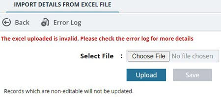
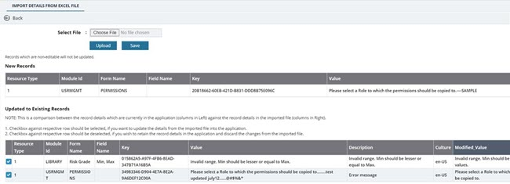

Modifying Error Messages in Bulk through Excel Upload
The high-level process of uploading error messages in bulk is as follows:
- Export the template workbook.
- Modify the error messages in the template workbook.
- Import the updated workbook.
-
Click Excel Import / Export, and then click Excel Template with Data.
An Excel workbook template with the details of all the available error messages in Mind is downloaded to your local storage.
Figure 1. 
-
To import the updated Excel workbook to Mind, perform the following steps:
-
Click Upload.
Mind validates the information in the Excel workbook for any errors.
- If there are any errors, an error log is generated that includes all the issues that must be resolved.
Figure 2. Note:You can click Error Log in the toolbar to download the error log to your local storage. - If no errors are found, Mind detects the new messages that are not currently available in the application but created and uploaded through import with a GUID/Key and Culture. It displays those new messages in a separate grid. The existing messages that are updated are displayed in a separate grid, along with a comparison between the existing information in Mind and the updated information uploaded in the Excel workbook. You can choose whether to update or retain the previous information by selecting or deselecting the check box.
Figure 3. 
- If no errors are found, Mind detects the new messages that are not currently available in the application but uploaded through import without a GUID/Key. In such cases, a GUID/Key is generated and assigned to each message, and displays them in a separate grid.
Figure 4. 
- If there are any errors, an error log is generated that includes all the issues that must be resolved.
-
Click Upload.